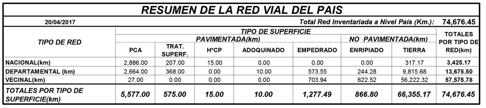

1. Introducción¶
El transporte por carretera, tanto de viajeros como de mercancias, es actualmente el modo predominante para el transporte interior en todos los países del mundo, y su participación en el transporte total ha venido aumentando continuamente en los últimos años.
Un elemento fundamental para el desarrollo del transporte por carretera es el camino por el que se mueven los vehículos. Para que la circulación resulte cómoda y segura es necesario disponer de una superficie preparada que reuna las condiciones adecuadas para permitir el movimiento de los vehículos a las velocidades que normalmente suelen alcanzar, sin que la conducción se convierta en una tarea fatigosa o arriesgada.
La red viaria tiene dos funciones fundamentales:
- Movilidad: permitir la circulación de forma rápida, cómoda, económica y segura de los vehículos automóviles
- Accesibilidad: permitir el acceso de estos vehículos a cualquier punto habitado en la zona servida por la red viaria.
Existen diferencias muy notables entre las redes viarias de las zonas urbanas y las que permiten la circulación fuera de ellas. Las redes urbanas están formadas, en su mayor parte, por calles, que son vías situadas en áreas edificadas por las que circulan tanto vehículos de motor como peatones, aunque con cierta separación entre ambos tráficos. Son muy frecuentes las intersecciones, así como los puntos de acceso desde los edificios colindantes y los vehículos realizan principalmente recirridos cortos. Por el contrario, en las carreteras que forman la red viaria interurbana, predomina el tráfico de vehículos a motor, las distancias entre los nudos viarios son frecuentemente de varios kilómetros, hay pocos puntos de acceso a la carretera desde los terrenos colindantes y los vehículos suelen recorrer distancias relativamente largas.
1.1. Clasificación de las carreteras¶
Las carreteras de un país pueden clasificarse por su función, teniendo en cuenta el tipo de recorridos que se hacen por ellas y la zona a la que sirven:
- Los caminos de menor categoría sirven únicamente a una o pocas propiedades y su objetivo es permitir el acceso a ellas.
- Las carreteras de interés local permiten el enlace entre pequeñas poblaciones y entre carreteras de mayor categoría; su tráfico es producido por esas poblaciones a las que sirven y su influencia es meramente local, predominando la función de accesibilidad.
- Las carreteras de interés comarcal enlazan los principales centros de actividad de una comarca y permiten, por intermedio de las carreteras locales, el acceso desde las pequeñas entidades de población hasta dichos centros de actividad; su ráfico espredominantemente de corta o media distancia y, en ellas, tienen importancia similar las funciones de accesibilidad y de movilidad.
- Las carreterasprincipales o de interés nacional unen entre sí los principales centros de actividad o de población de un país. Su función principal es la de permitir el tráfico a larga distancia, mientras que la función de accesibilidad a los terrenos contiguos a las carreteras tiene un interés muy secundario.
- Finalmente, las redes de autopistas, cuyo objetivo es encauzar el tráfico larga distancia, de forma rápida y segura, tienen una función exclusiva de movilidad, ya que no permiten el acceso a las zonas colindantes.
La clasificación de las carreteras de cada país sigue aproximadamente el anterior esquema, aunque con lógicas variantes debidas a los diferentes sistemas políticos y administrativos.
Los datos de la red de carreteras actual de Paraguay proporcionados por el Ministerio de Obras Públicas y Comunicaciones se resumen en el siguiente cuadro:
{kind=link}
El mapa de la red actual de carreteras de Paraguay es el siguiente: